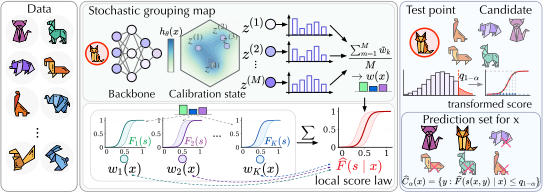

Learn a calibration state
A latent posterior represents ambiguity in each sample’s calibration behavior, beyond rigid observed groups.
for Effective Subgroup Reliability
1 University of Electronic Science and Technology of China
2 Intelligent Digital Media Technology, Key Laboratory of Sichuan Province
A coverage guarantee for the population can hide unreliable predictions for its subgroups.
Learn who should share calibration evidence.Standard conformal prediction guarantees coverage across the population. Yet clinically important subgroups can experience very different coverage.
Calibrating within predefined groups can help, but protecting the hardest group may enlarge prediction sets for everyone. Smaller groups also leave less evidence for calibration.
SGCP shares evidence through similar calibration behavior, learning a local score law for each sample.
No sensitive attributes as model inputs; they are used for subgroup evaluation.
Instead of estimating a separate score distribution from scratch for every sample, SGCP mixes a small set of learned calibration components.

A latent posterior represents ambiguity in each sample’s calibration behavior, beyond rigid observed groups.
Average stochastic memberships over posterior samples and combine the learned component score distributions.
Use an independent calibration set to obtain a conformal threshold. Retain candidate labels whose transformed scores lie below it.
Four benchmarks. Seven baselines. A target coverage of 90%.
| Method | Coverage (%) | Avg. set size ↓ | Coverage gap ↓ |
|---|
Source: Table 1 of the paper. Mean ± standard deviation across 20 runs, at the largest sample size. Bold denotes the minimum mean for set size and coverage gap; coverage should be near the 90% target, not maximized. Missing results are not treated as zero. AFCP was omitted on MIMIC-IV because of its calibration cost.
SGCP achieves the lowest coverage gap on SYN, Nursery, and BACH. On MIMIC-IV, FaReG has the lowest gap (0.5 vs. 0.8), while SGCP has the smaller average set size (1.107 vs. 1.174).
The learned components capture distinct regimes in nonconformity-score space. They are building blocks for calibration, not demographic groups.
Under the split-conformal exchangeability assumption, with the fitted transform independent of the calibration data, SGCP retains marginal coverage regardless of how accurately the local score law is learned.
Under the paper’s assumptions, including a continuous marginal transformed-score distribution, subgroup coverage is bounded by the Kolmogorov distance ΔG between subgroup and marginal transformed-score distributions.
These are distinct statements: marginal validity is distribution-free under exchangeability; exact coverage for every subgroup is not guaranteed for an arbitrary learned transform. See Propositions 1–3 and Appendix A.
The code repository includes SGCP and dataset-specific experiment presets. See its README for installation and dataset preparation.
Open GitHub repositorypip install -r requirements.txt
python run.py \
--grid-json json/sgcp_syn.json \
--outdir results_syn@misc{zhong2026stochasticgroupingconformalprediction,
title={Stochastic Grouping Conformal Prediction for Effective Subgroup Reliability},
author={Meihui Zhong and Wenxin Tai and Ting Zhong and Fan Zhou},
year={2026},
eprint={2610.11957},
archivePrefix={arXiv},
primaryClass={cs.LG},
url={https://arxiv.org/abs/2610.11957},
}